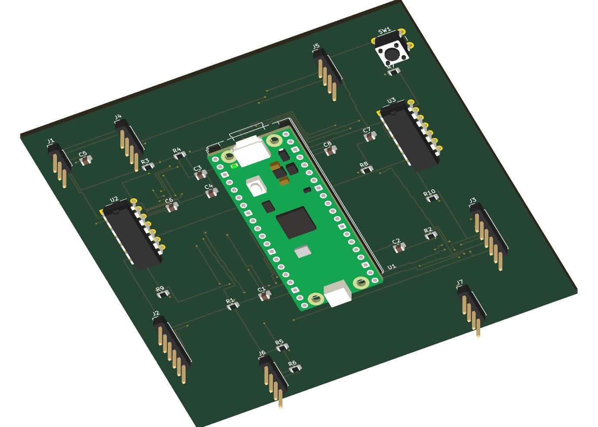

Plant + sensors
Pose, wheel encoders, and IMU
/amr/observationA loaded warehouse rover. A slippery floor. Two approaches to control — and a digital twin that makes the tradeoffs visible.
Replay actual recorded runs through a low-friction patch. Select a controller and inspect motion, error, and slip.
Four controllers, three floors, three payloads, three routes, five noise seeds. Filter the completed matrix below.
| Controller | Completed | Mean lateral RMSE | Integrated slip | Bus energy |
|---|
Traction supervision reduced low-traction slip by 18.76% with LQR and 18.48% with nonlinear control. The predeclared 20% hypothesis was not met. These percentages use low-traction cases; the filtered table averages the cases you select.
A custom two-layer Raspberry Pi Pico carrier brings encoders, an IMU, external drivers, analog current filters, and a latched drive gate into one editable KiCad project.
Local KiCad 10.0.6 verification. Motor power flows through external drivers. Circuit simulation covers the sensing filter; this is a virtual prototype.

Actual DDS messages, transforms, controller-selection service, and rosbag replay. Gazebo contact responds to wheel torque through a ROS bridge.
Pose, wheel encoders, and IMU
/amr/observationLQR or nonlinear tracking
/drive/wheel_targetsVirtual I/O and Gazebo bridge
/odom · /tf · /clockDiagram illustrates the tested graph. The 540-case controller study uses the mathematical plant; Gazebo provides a separate contact check.
Four recorded 16-second Windows runs, with a 20 ms compute budget. Compute duration and OS wake lateness are measured separately.
| Controller | p99 compute | Max compute | Misses |
|---|
Five injected faults disabled the drive. Qualification delays and the modeled coast after injection remain visible.
| Fault | Disable delay | Coast |
|---|
A narrated demonstration of the controller runs, ROS graph, actual PCB renders, circuit transient, timing, and fault response.
Download transcript ↓Entirely software-based. ROS REP 103/105 guide units and frames; IPC and ISO references guide documented design intent. The project demonstrates modeled behavior and soft real-time pacing. Physical performance, manufacturing readiness, hard real-time scheduling, and safety certification require further validation. The model has no emergency brake.
Standards mapping and assumptions ↗